<title>Inputs Screens Vet</title>
<link rel="stylesheet" href="https://fonts.googleapis.com/css2?family=Barlow:wght@400;500;600&family=Barlow+Semi+Condensed:wght@600;700&display=swap">
<style>
  /* One column: two questions left open by the input card's check, each shown as today / drawn, then the choices.
     A single dark look, the app's own: its panels, its cyan, its amber. */
  :root {
    color-scheme: dark;
    --bg: #0b0d11; --panel: #14181e; --edge: #2a313b; --ink: #e9edf2; --ink-2: #a8b1bd; --ink-3: #7a8491;
    --accent: #3bc6e8; --mark: #ffd60a;
    --display: "Barlow Semi Condensed", "Arial Narrow", Arial, sans-serif;
    --body: Barlow, "Segoe UI", Arial, sans-serif;
  }
  body { background: var(--bg); color: var(--ink); font-family: var(--body); font-size: 16px; line-height: 1.45; }
  main { max-width: 760px; margin: 0 auto; padding-inline: 16px; padding-block: 20px 48px; display: flex; flex-direction: column; gap: 32px; }
  h1 { font-family: var(--display); font-weight: 700; font-size: 30px; line-height: 1.1; margin: 0; text-wrap: balance; }
  h2 { font-family: var(--display); font-weight: 700; font-size: 22px; line-height: 1.15; margin: 0; text-wrap: balance; }
  p { margin: 0; color: var(--ink-2); max-width: 62ch; }
  .lede { color: var(--ink); }
  .tag { font-family: var(--display); font-weight: 700; letter-spacing: .08em; text-transform: uppercase; font-size: 12px; color: var(--ink-3); }
  .tag.new { color: var(--mark); }
  .pair { display: grid; grid-template-columns: repeat(auto-fit, minmax(260px, 1fr)); gap: 16px; align-items: start; }
  .stack { display: flex; flex-direction: column; gap: 18px; }
  figure { margin: 0; display: flex; flex-direction: column; gap: 8px; min-width: 0; }
  figure button.pic { all: unset; cursor: zoom-in; display: block; border: 1px solid var(--edge); border-radius: 12px; overflow: hidden; background: var(--panel); }
  figure button.pic:focus-visible, .more:focus-visible { outline: 2px solid var(--accent); outline-offset: 2px; }
  figure img { display: block; width: 100%; height: auto; }
  figcaption { display: flex; flex-direction: column; gap: 2px; }
  figcaption b { font-weight: 600; color: var(--ink); }
  figcaption span { color: var(--ink-2); font-size: 15px; }
  .more { all: unset; cursor: zoom-in; color: var(--accent); font-size: 15px; font-weight: 600; text-decoration: underline; text-underline-offset: 3px; align-self: flex-start; border-radius: 4px; }
  section { display: flex; flex-direction: column; gap: 14px; }
  .q { border: 1px solid var(--edge); border-radius: 12px; background: var(--panel); padding: 14px 16px; display: flex; flex-direction: column; gap: 6px; }
  .q b { color: var(--ink); font-weight: 600; }
  .q span { color: var(--ink-2); }
  .q .rec { color: var(--accent); font-weight: 600; }
  dialog { border: 0; padding: 0; background: #000; max-width: 100vw; max-height: 100dvh; width: 100vw; height: 100dvh; overflow: auto; }
  dialog::backdrop { background: #000; }
  dialog img { display: block; width: 780px; max-width: none; margin: 0 auto; cursor: zoom-out; }
  dialog img.wide { width: 1392px; }
  dialog button { position: fixed; top: calc(10px + env(safe-area-inset-top, 0px)); right: 12px; font: 600 15px var(--body); color: var(--ink); background: var(--panel); border: 1px solid var(--edge); border-radius: 10px; padding: 8px 14px; }
</style>
<main>
  <header style="display:flex;flex-direction:column;gap:8px">
    <span class="tag">A design vet · the “drawn” pictures are not built</span>
    <h1>The Inputs calendar and list, with fewer words</h1>
    <p class="lede">Both screens are sound and clearly made for a squadron. The calendar is the stronger one. The list carries most of the extra words: its own form on top, and small print that repeats what the columns already say.</p>
    <p>Every picture is the real app. A “today” picture is untouched. Tap a picture to see it full size.</p>
  </header>

  <section>
    <span class="tag">1 · The biggest one</span>
    <h2>The list opens on a form, not on the list</h2>
    <p>On a phone the whole first screen is a form for adding an input. It is also a second, different form from the window the calendar opens. Drawn: one “+ Input” button that opens that same window, and the list starts at once.</p>
    <div class="pair">
      <figure>
        <button type="button" class="pic" data-zoom="img/inputs-vet/phone-list-today.png" aria-label="Open picture: A screen of form before any input">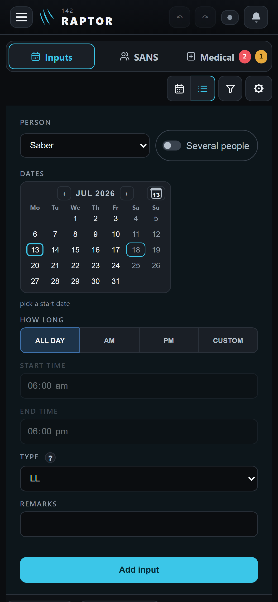</button>
        <figcaption><span class="tag">Today · phone</span><b>A screen of form before any input</b></figcaption>
      </figure>
      <figure>
        <button type="button" class="pic" data-zoom="img/inputs-vet/phone-list-drawn.png" aria-label="Open picture: One button, then the list">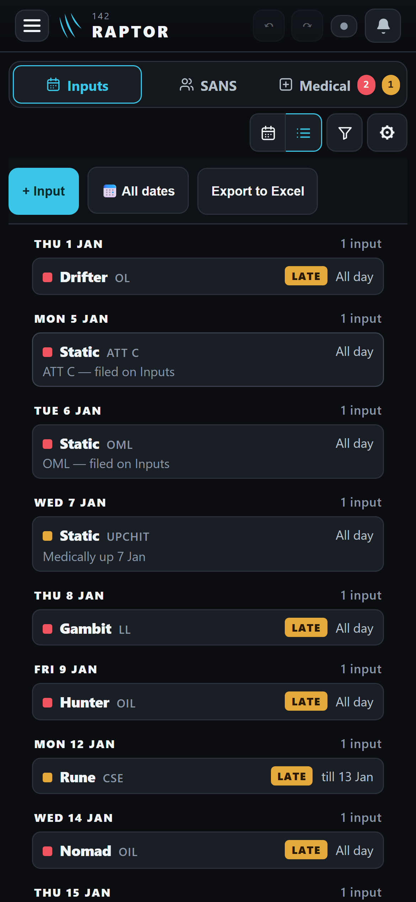</button>
        <figcaption><span class="tag new">Drawn · phone</span><b>One button, then the list</b></figcaption>
      </figure>
    </div>
    <div class="stack">
      <figure>
        <button type="button" class="pic" data-zoom="img/inputs-vet/desk-list-today.png" data-wide aria-label="Open picture: The form takes the top third; each row is two lines">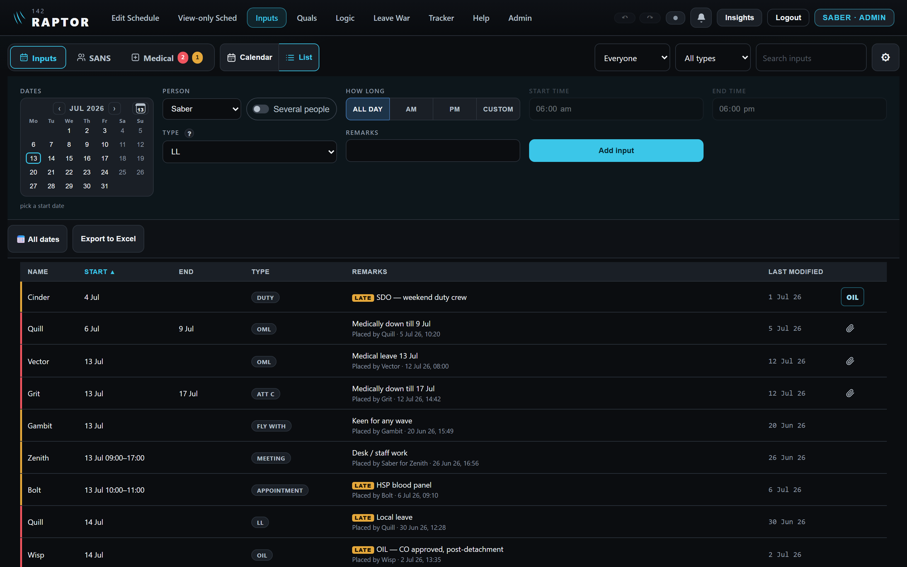</button>
        <figcaption><span class="tag">Today · desktop</span><b>The form takes the top third; each row is two lines</b><span>Under every remark: “Placed by Bolt · 6 Jul 26, 09:10”. The name is already in the first column and the date in the last.</span></figcaption>
      </figure>
      <figure>
        <button type="button" class="pic" data-zoom="img/inputs-vet/desk-list-drawn.png" data-wide aria-label="Open picture: One button; one line a row; “By Saber” only when someone else filed it">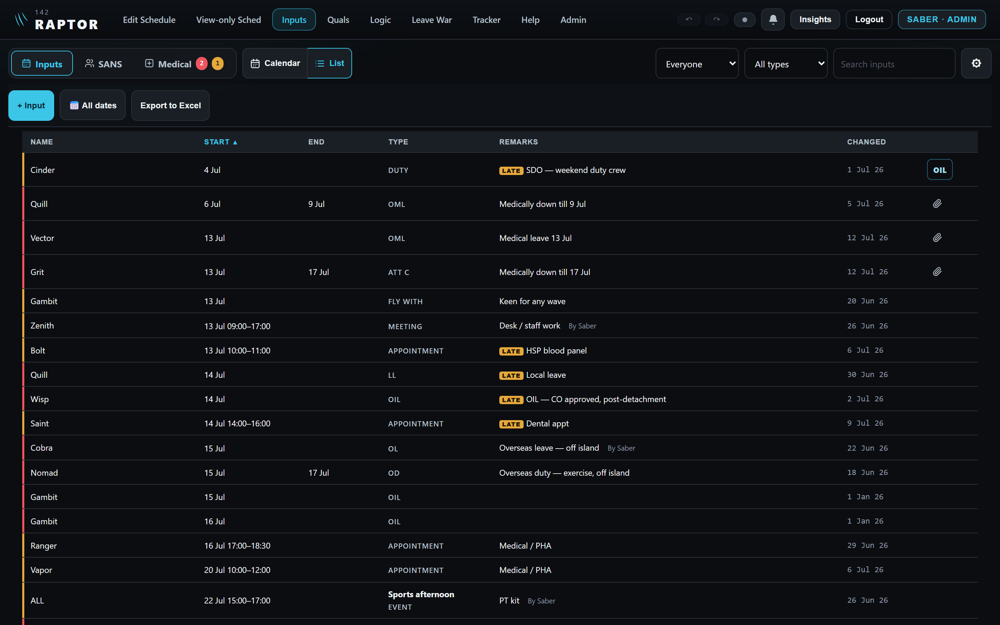</button>
        <figcaption><span class="tag new">Drawn · desktop</span><b>One button; one line a row; “By Saber” only when someone else filed it</b><span>About half as many rows again fit on the screen. Also drawn here: every name of a shared input, the kind in small grey capitals (option B), and “Changed” for “Last modified”.</span></figcaption>
      </figure>
    </div>
  </section>

  <section>
    <span class="tag">2 · The input’s window</span>
    <h2>The paragraph of instructions goes</h2>
    <p>“To change its dates, tap the new start on the calendar above, then the new end — for one day, tap that day and Save. The line under the calendar shows what Save will write.” The line under the calendar already shows it. For a shared input one short line stays: “Date changes apply to all 4.”</p>
    <div class="pair">
      <figure>
        <button type="button" class="pic" data-zoom="img/inputs-vet/phone-window-today.png" aria-label="Open picture: The instructions sit above the buttons">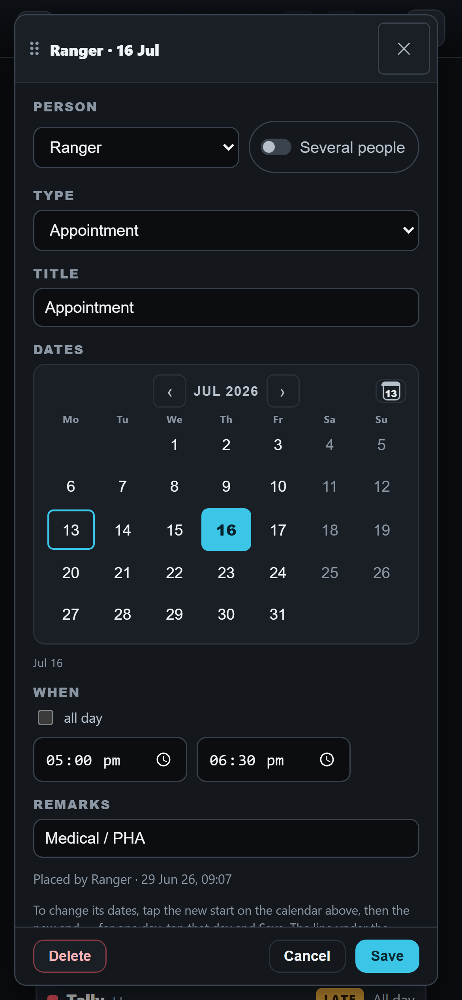</button>
        <figcaption><span class="tag">Today · phone</span><b>The instructions sit above the buttons</b></figcaption>
      </figure>
      <figure>
        <button type="button" class="pic" data-zoom="img/inputs-vet/phone-window-drawn.png" aria-label="Open picture: Gone">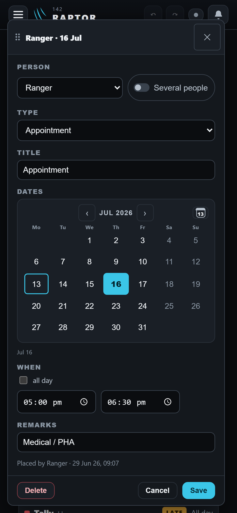</button>
        <figcaption><span class="tag new">Drawn · phone</span><b>Gone</b></figcaption>
      </figure>
    </div>
    <div class="pair">
      <figure>
        <button type="button" class="pic" data-zoom="img/inputs-vet/desk-window-today.png" aria-label="Open picture: The same paragraph">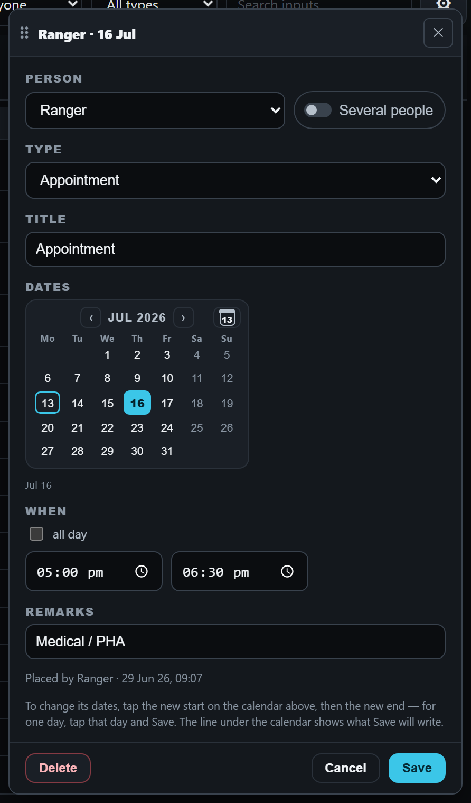</button>
        <figcaption><span class="tag">Today · desktop</span><b>The same paragraph</b></figcaption>
      </figure>
      <figure>
        <button type="button" class="pic" data-zoom="img/inputs-vet/desk-window-drawn.png" aria-label="Open picture: Gone">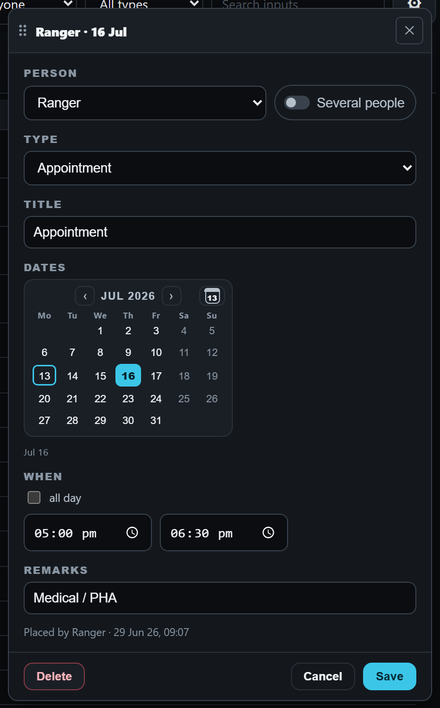</button>
        <figcaption><span class="tag new">Drawn · desktop</span><b>Gone</b></figcaption>
      </figure>
    </div>
  </section>

  <section>
    <span class="tag">3 · The month</span>
    <h2>A shared bar says how many; a timed bar looks lighter</h2>
    <p>Today a shared input’s bar leads with whoever comes first in the alphabet (“Drifter +3 · Meeting”), so Saber’s own meeting does not show his name. And a one-hour appointment looks as heavy as a whole day of leave. Drawn: “4 · Meeting”, and timed inputs as a lighter bar with a solid edge.</p>
    <div class="stack">
      <figure>
        <button type="button" class="pic" data-zoom="img/inputs-vet/desk-month-today.png" data-wide aria-label="Open picture: Every bar the same weight">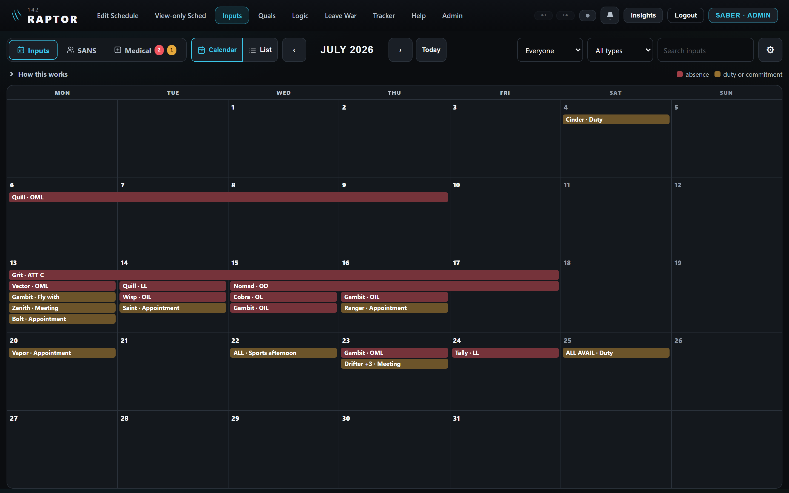</button>
        <figcaption><span class="tag">Today · desktop</span><b>Every bar the same weight</b></figcaption>
      </figure>
      <figure>
        <button type="button" class="pic" data-zoom="img/inputs-vet/desk-month-drawn.png" data-wide aria-label="Open picture: All-day solid, timed lighter; the count first; the key says “duty”">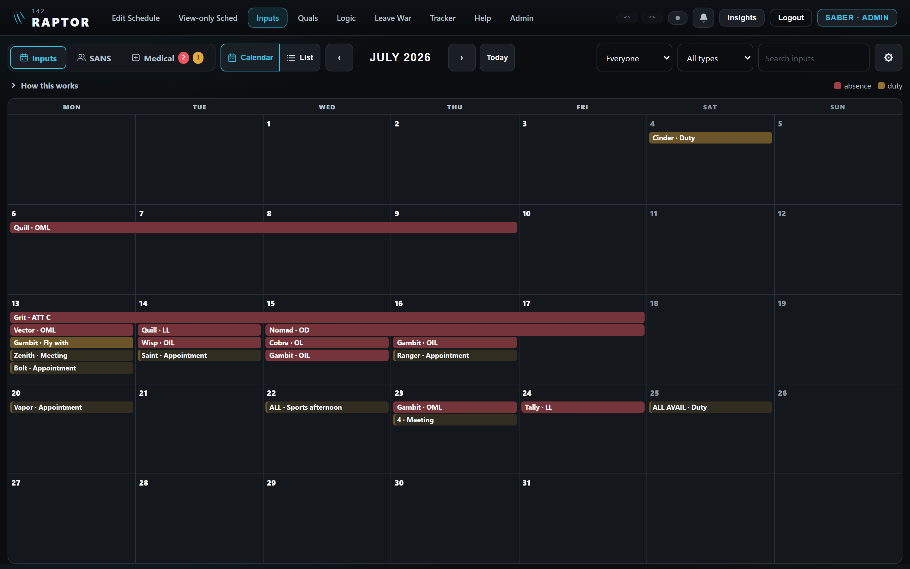</button>
        <figcaption><span class="tag new">Drawn · desktop</span><b>All-day solid, timed lighter; the count first; the key says “duty”</b></figcaption>
      </figure>
    </div>
  </section>

  <section>
    <span class="tag">4 · The gear’s settings</span>
    <h2>The same settings in fewer words</h2>
    <div class="pair">
      <figure>
        <button type="button" class="pic" data-zoom="img/inputs-vet/desk-gear-today.png" aria-label="Open picture: Three explanations of a sentence or two each">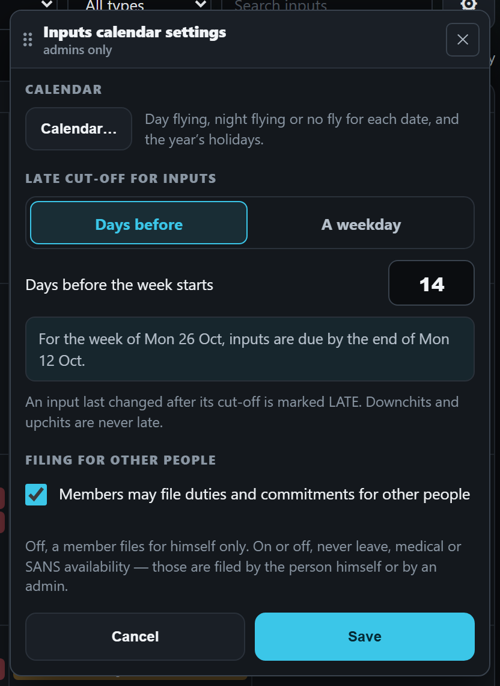</button>
        <figcaption><span class="tag">Today</span><b>Three explanations of a sentence or two each</b></figcaption>
      </figure>
      <figure>
        <button type="button" class="pic" data-zoom="img/inputs-vet/desk-gear-drawn.png" aria-label="Open picture: One short line each">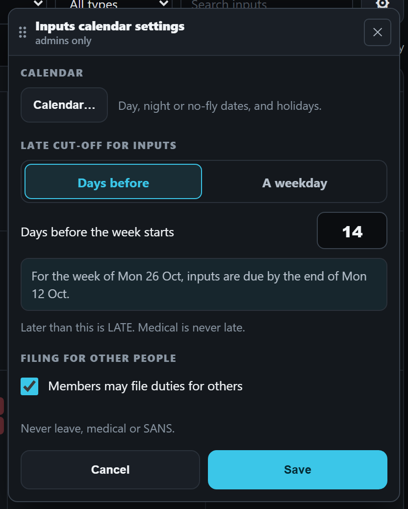</button>
        <figcaption><span class="tag new">Drawn</span><b>One short line each</b><span>The worked example (“For the week of Mon 26 Oct…”) stays: it is what makes “14” clear.</span></figcaption>
      </figure>
    </div>
  </section>

  <section>
    <span class="tag">Smaller words · not drawn</span>
    <h2>More that can shrink</h2>
    <div class="q"><b>“How this works”</b><span>Five lines become four shorter ones. The line about red and amber goes, because the colour key beside it says the same.</span></div>
    <div class="q"><b>A new input’s window</b><span>“Choose the dates and the hours. Save adds one input covering the whole date range.” goes. It also says “Save” where the button says “Add”.</span></div>
    <div class="q"><b>The empty list</b><span>“No inputs between 10 Oct → 24 Oct. Change the dates, or pick ‘All dates’.” becomes “No inputs 10–24 Oct. Try All dates.”</span></div>
    <div class="q"><b>Phone filters</b><span>The labels “Person”, “Type” and “Search” go. The boxes already read “Everyone”, “All types” and “Search inputs”.</span></div>
    <div class="q"><b>What stays</b><span>LATE and its reason, “By Saber”, the colour key, the cut-off line, the type help, the OIL lines, and the full “Placed by … date, time” inside the input’s own window.</span></div>
  </section>

  <section>
    <span class="tag">Found on the way · to check before anything is built</span>
    <h2>Three things that are not about words</h2>
    <div class="q"><b>Hours may show as am / pm in the two forms</b><span>The time boxes follow the device’s own setting, so “05:00 pm” can appear beside “17:00” on the card. To be checked on your iPhone first.</span></div>
    <div class="q"><b>A shared input’s window opens on the whole people picker</b><span>Changing a meeting’s hour means scrolling past every puck. It could open showing only its own people, with “Edit people”.</span></div>
    <div class="q"><b>On a desktop the month shifts when a day is opened</b><span>The columns narrow and the date you clicked moves from under the pointer.</span></div>
  </section>

  <section>
    <h2>Yours to choose</h2>
    <div class="q"><b>V1 · The list’s form becomes one “+ Input” button</b><span><span class="rec">Recommended: yes.</span> One way to add an input everywhere, and the list is a list again.</span></div>
    <div class="q"><b>V2 · The desktop list’s small print: “By Saber” only when someone else filed it</b><span><span class="rec">Recommended: yes.</span> The same rule you chose for the cards. The full “who, date, time” stays in the input’s window.</span></div>
    <div class="q"><b>V3 · Remove the instructions in the input’s window</b><span><span class="rec">Recommended: yes.</span></span></div>
    <div class="q"><b>V4 · The month’s bars: count first, timed lighter</b><span><span class="rec">Recommended: yes to the count; the lighter timed bar is your taste to judge on the picture.</span></span></div>
    <div class="q"><b>V5 · Shorter settings and the smaller words</b><span><span class="rec">Recommended: yes.</span></span></div>
  </section>
</main>
<dialog id="zoom" aria-label="Picture, full size"><button type="button" id="zoomClose">Close</button></dialog>
<script>
  const dlg = document.getElementById('zoom'), big = document.getElementById('zoomImg')
  document.querySelectorAll('[data-zoom]').forEach(b => b.addEventListener('click', () => {
    big.src = b.dataset.zoom; big.alt = (b.querySelector('img') || b.closest('figure').querySelector('img')).alt
    big.classList.toggle('wide', b.hasAttribute('data-wide'))
    if (dlg.showModal) dlg.showModal(); else dlg.setAttribute('open', '')
  }))
  const shut = () => { if (dlg.close) dlg.close(); else dlg.removeAttribute('open') }
  document.getElementById('zoomClose').addEventListener('click', shut)
  big.addEventListener('click', shut)
</script>
